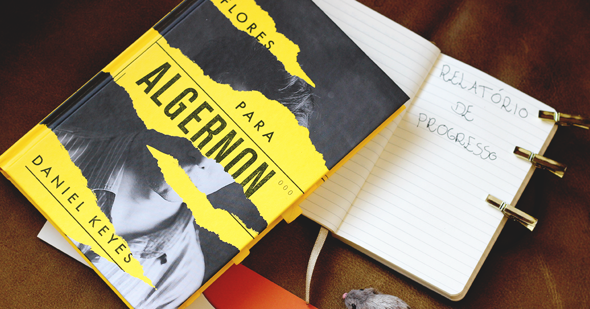

Um jovem tímido se esconde em seu próprio mundo até conhecer dois irmãos que o ajudam a viver novas experiências. Embora esteja feliz nessa nova fase, ele não esquece as tristezas do passado, que têm origem em uma chocante revelação.
Em uma ruazinha estreita e silenciosa de Tóquio, num subsolo, existe um estabelecimento que, há mais de 100 anos, serve um café cuidadosamente preparado. Graças a uma lenda urbana, o local recebe diversos frequentadores que esperam ansiosamente para viver uma experiência única: fazer uma viagem no tempo.

Charlie Gordon, um homem com deficiência intelectual severa, é selecionado para ser o primeiro humano a passar pelo procedimento. O experimento é um avanço científico sem precedentes, e a inteligência de Charlie aumenta tanto que ultrapassa a dos médicos que o planejaram.